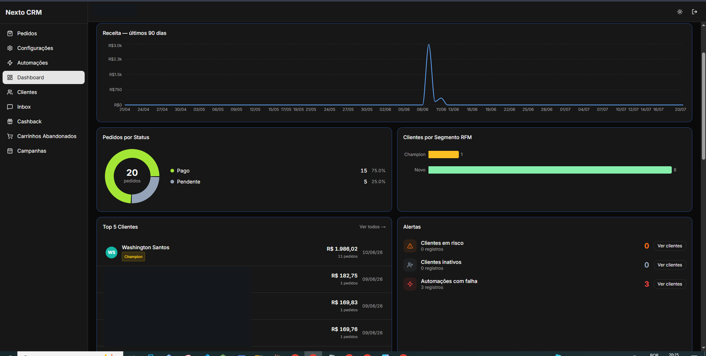
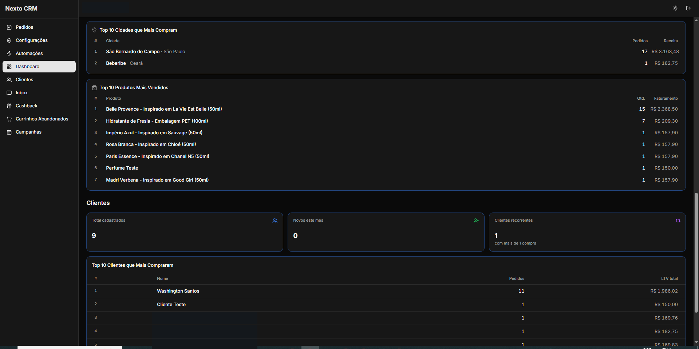
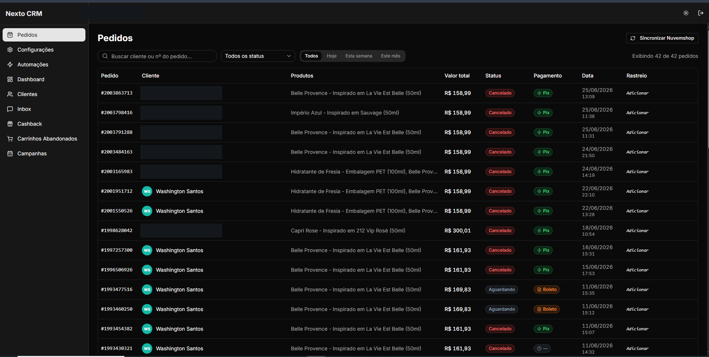
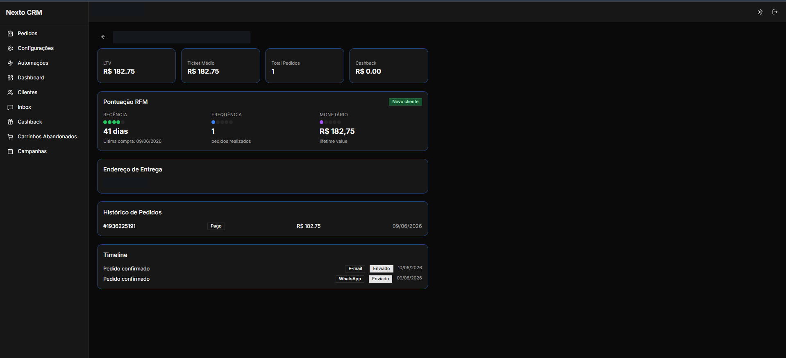

CRM Next
Repositório privadoCRM desenvolvido para resolver um problema real de gestão de tráfego: alto volume de carrinhos abandonados e Pix não pagos. Automatiza a recuperação de vendas com disparos em intervalos (1h, 4h e 24h) e consolida indicadores como LTV, frequência de compra, produtos mais vendidos e vendas por cidade e estado.



